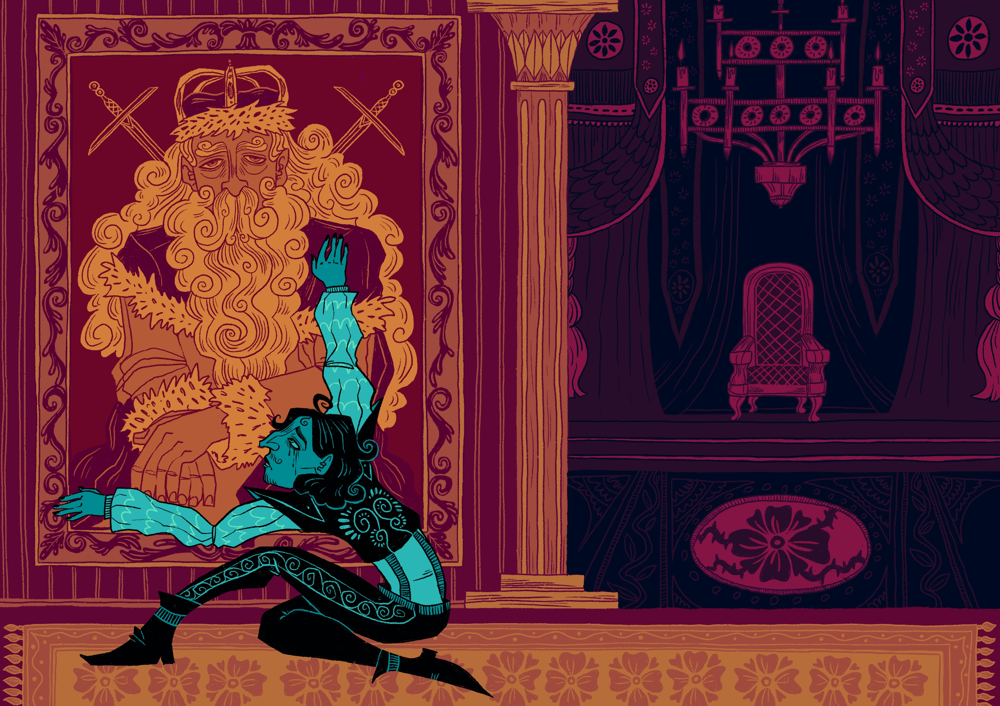
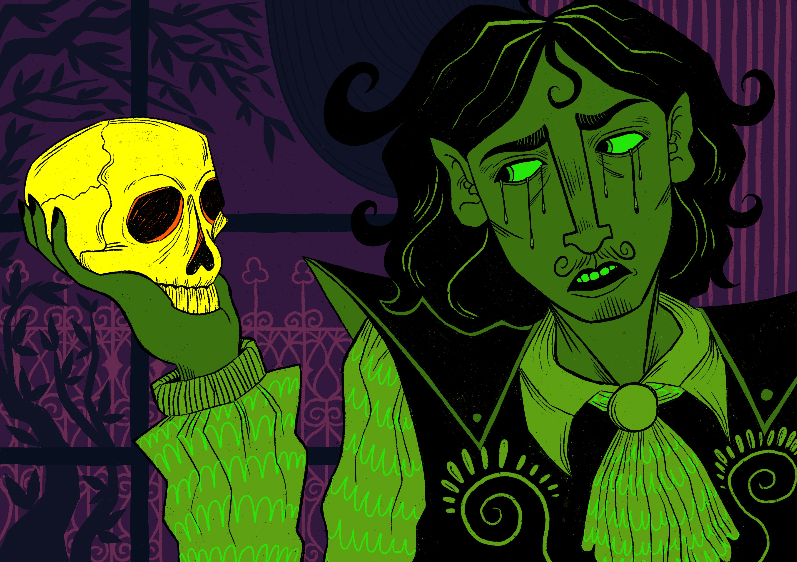
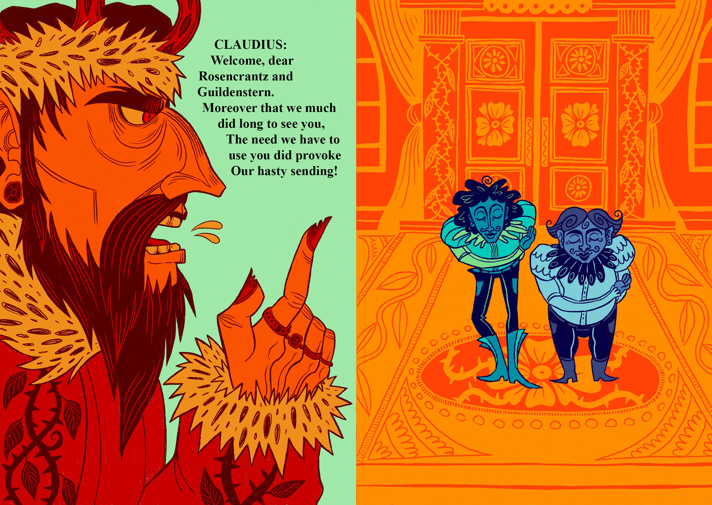
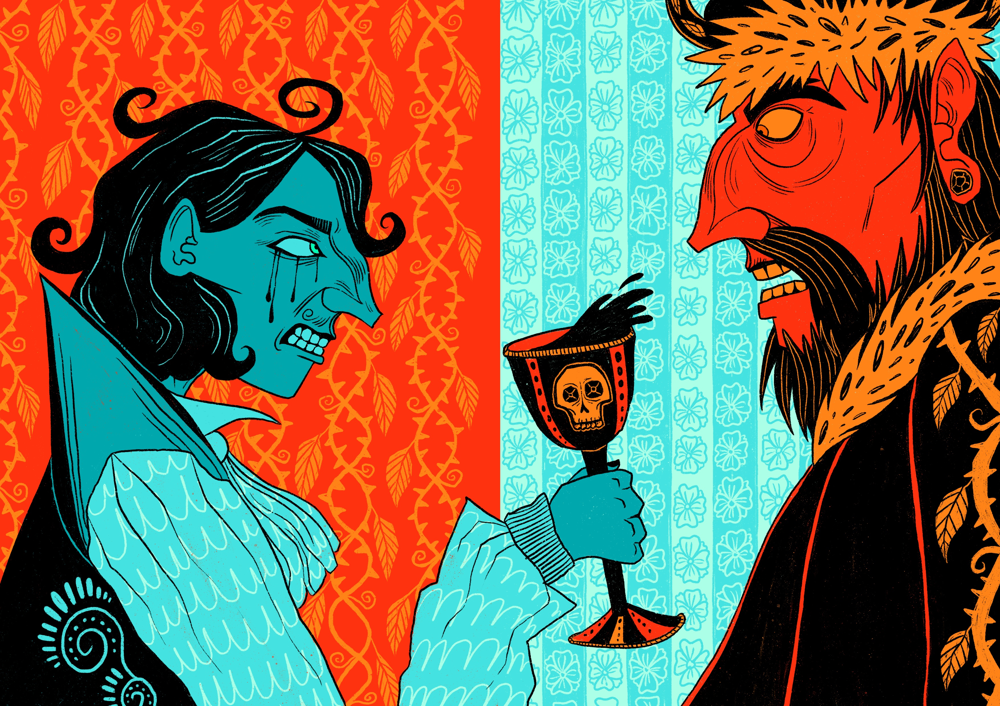
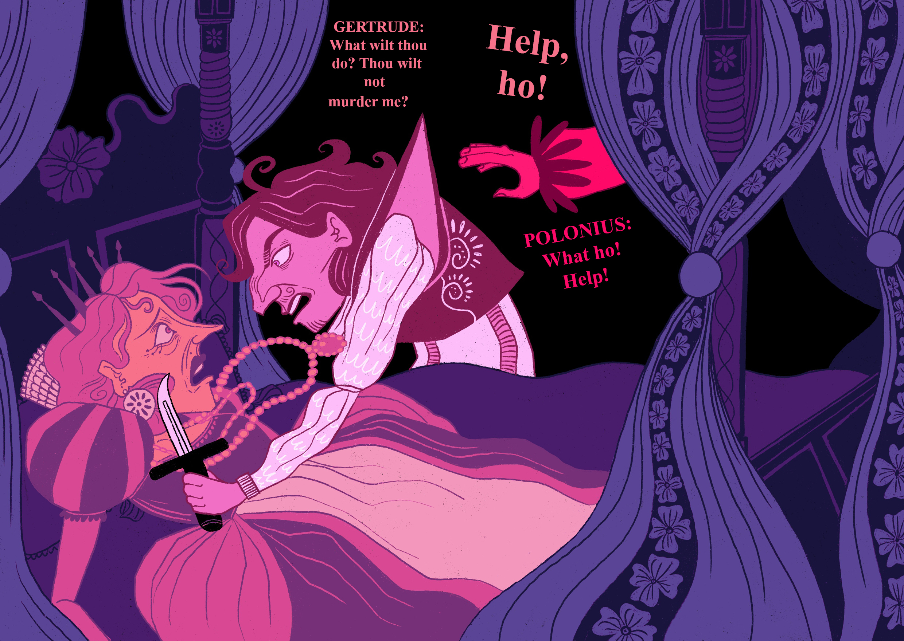
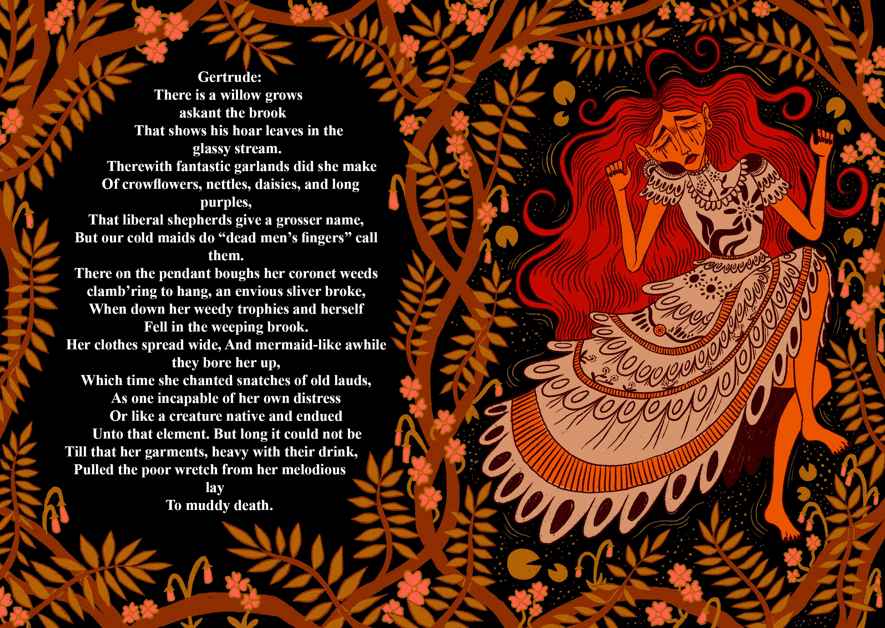

This is the front cover for my Hamlet project. I purposefully made this cover feel claustrophobic and drew the exterior of Elsinore castle with a doll-house like composition, with all of the characters' silhouettes in the windows. Hamlet is tightly positioned in the middle as the corruption inside the castle closes in on him.

"The First Soliloquy" - Hamlet mourns the loss of his father inside Elsinore Castle. I wanted to give this scene a sense of drama by picturing Hamlet to appear like a ragdoll as he hugs a portrait of his father on the wall.

0
"The Skull of Yorick" - My take on one of the most well-known scenes from the play, which is when Hamlet discovers the skull of the court jester, Yorick, and contemplates the inevitability of death. I wanted this illustration to have a macabre, almost 'halloweeny' feel to it to reference the theme of death in this scene.



i

